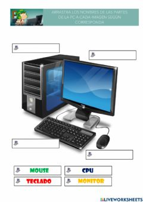

En esta asignatura hemos dado mucha teoria,como estos apartados:
Teniamos que saber sus definiciones completas y sus diferencias,no era muy complicado.
En este caso nos teniamos que aprender los conectores internos y externos, saber identificarlos y saber sus nombres.
Este apartado era un poco mas complejo, ya que, teniamos que sabernos varios conceptos como "red lan""red wlan",entre otros.Y tambien saber para que servia cada uno
Pagina principal 